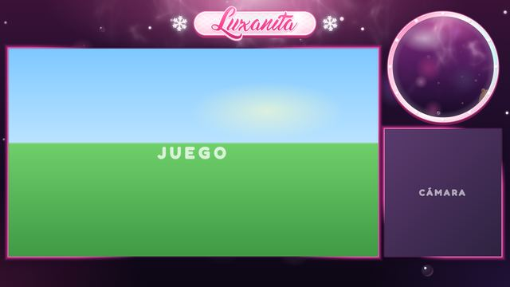
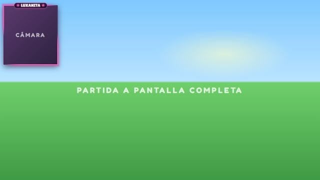
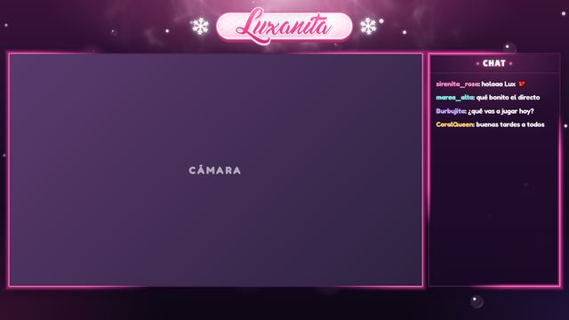
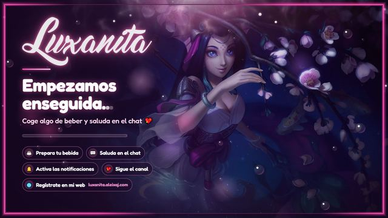
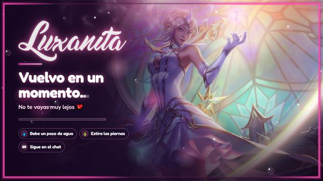
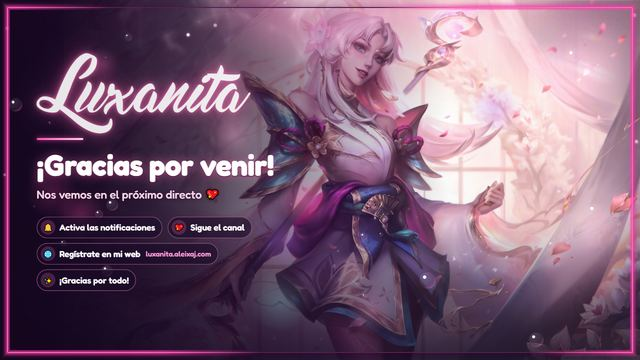
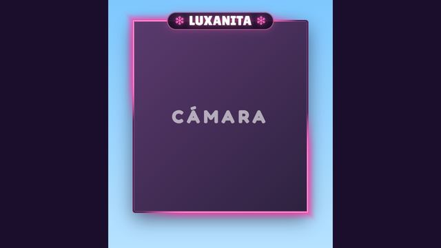

Antes de empezar
Tres cosas y ya podemos ir al lío.
-
Descomprime el .zip y deja la carpeta en su sitio
Clic derecho en el .zip → "Extraer todo...". Déjala en un sitio fijo, por ejemplo
C:\Luxanita.Importante: OBS lee los archivos desde esa carpeta. Si luego la mueves o le cambias el nombre, las escenas dejan de verse.No abras los archivos desde dentro del .zip. Windows te deja, pero se ven rotos (sale un corazón gigante y poco más), porque ahí dentro cada archivo está solo y no encuentra a los demás. -
Comprueba que lo tienes todo
- OBS Studio (o Streamlabs Desktop) instalado.
- Una cuenta de Streamlabs conectada a Twitch.
-
Dos palabras que salen todo el rato
- Fuente: cada cosa que añades a una escena de OBS (la cámara, el juego, el overlay...). Se añaden con el botón "+" del cuadro "Fuentes".
- Navegador: un tipo de fuente que muestra una página web o un archivo
.html. Todo el overlay se añade así.
PARTE 1 Alertas, en Streamlabs
Son 4 alertas. Cada una tiene su carpeta con tres archivos de texto y su sonido.
| Carpeta | Alerta en Streamlabs | Duración |
|---|---|---|
| follow | Follows | 6 segundos |
| sub | Subscriptions | 11 s (8 s en las compactas) |
| gift | Gift Subs (subs regaladas) | 8 segundos |
| raid | Raids | 9 segundos |
1.1 · Elige qué versión quieres
| Carpeta | Cómo se ven |
|---|---|
| grandes/ | Grandes, en el centro, con efectos por toda la pantalla. Quedan muy bien, pero tapan el juego. |
| compactas/arriba/ | Más pequeñas, arriba en el centro. Los efectos solo salen alrededor de la alerta, así que no molestan mientras juegas. ← la recomendada |
| compactas/centro/ | Igual que las de arriba, pero en mitad de la pantalla. |
Los pasos son los mismos para las tres. Solo cambia la carpeta de la que copias los
archivos (por ejemplo compactas/arriba/follow).
1.2 · Instala cada alerta (repite esto con las 4)
-
Abre la alerta en Streamlabs
Entra en streamlabs.com → Alert Box y abre la que toque (por ejemplo, Follows).
-
Activa "Enable Custom HTML/CSS"
Aparecen tres pestañas: HTML, CSS y JS.
-
Pega cada archivo en su pestaña
En cada pestaña, borra todo lo que haya y pega el archivo del mismo nombre:
Pestaña Archivo que pegas HTML alerta.htmlCSS alerta.cssJS alerta.jsCómo se copia un archivo: clic derecho → Abrir con → Bloc de notas, luego Ctrl+A y Ctrl+C. En Streamlabs: clic dentro de la pestaña, Ctrl+A y Ctrl+V. -
Sube el sonido
En "Sound", sube el
sonido.mp3de esa misma carpeta. -
Pon la duración
En "Alert Duration", los segundos de la tabla de arriba.
-
Quita la imagen y deja la animación simple
Borra la imagen de la alerta ("Image") y elige la entrada y salida más simples (
fadeInyfadeOut). La animación bonita ya va dentro de los archivos. -
Guarda
Pulsa "Save". Y las mismas siete cosas con la siguiente alerta.
1.3 · Añade las alertas a OBS (esto solo una vez)
-
Copia el enlace del widget
En Streamlabs → Alert Box, copia la "Widget URL".
-
Añádelo como fuente Navegador
En OBS, en cada escena donde quieras alertas: Fuentes → "+" → Navegador.
- URL: pega el enlace
- Ancho 1920 · Alto 1080
-
Súbela arriba del todo
En la lista de fuentes, la de las alertas va la primera, para que se vean por encima de todo lo demás.
1.4 · Comprueba que funcionan
- En Streamlabs pulsa "Test Follow", "Test Subscription", etc. Tiene que
salir el nombre de la persona, no la palabra
{name}. - Sin Streamlabs: desde INICIO.html, o abriendo el
preview.htmlde cualquier carpeta, y pulsando "Probar alerta".
PARTE 2 Overlay, en OBS
Una escena por archivo, todos dentro de la carpeta overlay/.
Pulsa cualquiera para verla.

overlay.html
partida.html
charla.html
empezando.html
descanso.html
final.html
camara.html2.1 · Añade cada escena
-
Crea la escena
En el cuadro "Escenas" de OBS, pulsa "+" y ponle nombre (por ejemplo "Jugando").
-
Añade la fuente
En "Fuentes": "+" → Navegador → ponle nombre → Aceptar.
-
Apunta al archivo
- Marca "Archivo local" y pulsa "Examinar". Elige el archivo de la escena
(por ejemplo
overlay/overlay.html). - Ancho 1920 · Alto 1080.
- Aceptar.
- Marca "Archivo local" y pulsa "Examinar". Elige el archivo de la escena
(por ejemplo
2.2 · Coloca el juego y la cámara
Las escenas de juego y charla tienen huecos transparentes: ahí se ven el juego y la cámara, que van debajo del overlay en la lista de fuentes.
-
Abre la transformación
Clic derecho en la fuente (la cámara o el juego) → Transformar → Editar transformación. O selecciónala y pulsa Ctrl+E.
-
Escribe la posición
La Posición (X, Y) de la tabla de abajo.
-
Tipo de caja delimitadora
Elige "Escalar a los límites exteriores" (Scale to outer bounds).
-
Tamaño de la caja
El tamaño de la tabla de abajo.
-
Marca "Recortar a la caja delimitadora"
Así la imagen llena el hueco sin deformarse: lo que sobra por los lados se recorta solo.
| Escena | Fuente | Posición (X, Y) | Tamaño |
|---|---|---|---|
| overlay.html | Juego | 32, 182 | 1392 x 783 |
| Cámara | 1448, 485 | 440 x 480 | |
| partida.html | Juego | 0, 0 | 1920 x 1080 |
| Cámara | 24, 34 | 320 x 352 | |
| charla.html | Cámara | 32, 182 | 1392 x 783 |
| Chat | 1460, 254 | 416 x 700 (ver 2.3) |
- Alertas (Alert Box) ← arriba del todo
- Chat (solo en charla)
- Overlay (el
.html) - Cámara
- Juego ← abajo del todo
2.3 · El chat, en la escena de charla
-
Copia el enlace del Chat Box
En streamlabs.com → Chat Box, copia el enlace del widget.
-
Añádelo a la escena
Fuentes → "+" → Navegador. URL: el enlace. Ancho 416 · Alto 700.
-
Ponlo encima del overlay
En la lista de fuentes, por encima del
.html. -
Colócalo
Ctrl+E y Posición
1460, 254. Queda dentro del panel rosa de la derecha, debajo de "CHAT".
2.4 · Cuenta atrás en la pantalla de empezando (opcional)
Sin tocar nada sale una barra de carga animada. Para que salga una cuenta atrás de, por ejemplo, 5 minutos:
- Abre las propiedades
Doble clic en la fuente de empezando.
- Desmarca "Archivo local"
-
Escribe la dirección con los minutos
En "URL", la ruta del archivo terminada en
?minutos=5. Si la carpeta está enC:\Luxanita:file:///C:/Luxanita/overlay/empezando.html?minutos=5Ojo con las barras: van
/hacia la derecha. Cambia el 5 por los minutos que quieras. -
Marca "Actualizar el navegador cuando la escena se active"
Así la cuenta empieza cuando cambias a esa escena, no al abrir OBS.
Cuando llega a cero, pone "¡Ya casi!".
2.5 · Marco de cámara suelto
Es solo el marco de la cámara con el nombre y el fondo transparente. Sirve para ponerlo encima de cualquier juego, donde quieras.
-
Añade el marco
Fuentes → "+" → Navegador → Archivo local =
overlay/camara.html. Ancho 416 · Alto 460. -
Pon la cámara debajo
En la lista de fuentes, debajo del marco. Con Ctrl+E dale tamaño
320 x 352. -
Cuádrala con el marco
48 píxeles a la derecha y 40 hacia abajo de donde esté el marco. Si el marco está en
0, 0, la cámara va en48, 40. -
Agrúpalas
Selecciona las dos (Ctrl + clic) → clic derecho → "Agrupar elementos seleccionados". Ya puedes moverlas y redimensionarlas juntas.
PARTE 3 Ajustes recomendados
En cada fuente Navegador del overlay, marca "Apagar la fuente cuando no esté visible". No lo marques en la de las alertas: si no, alguna podría no salir.
Abre cualquier escena con doble clic (o desde
INICIO.html) y pulsa F11 para pantalla completa.
Los huecos salen a cuadritos: eso quiere decir que en OBS son transparentes. Si añades
?demo al final de la dirección, se ve con un juego y una cámara de ejemplo.
PARTE 4 Si algo no sale bien
Alertas
{name} o algo entre llaves en vez del nombre
Revisa que pegaste cada archivo en su pestaña: HTML con HTML, CSS con CSS y JS con JS.
- Mira que en "Sound" esté subido el
sonido.mp3y que el volumen no esté a 0. - En OBS, abre las propiedades de la fuente de alertas. Si tiene marcado "Controlar audio mediante OBS", la alerta sale en el Mezclador de audio: comprueba que ahí no esté silenciada.
La alerta funciona igual, solo que sin el número. Avisa a quien te las preparó.
Overlay
Has movido o renombrado la carpeta. Vuelve a elegir el archivo con "Examinar" en las propiedades de la fuente.
Repite los pasos del 2.2 con la posición y el tamaño de la tabla.
No debería pasar. Si pasa: abre las propiedades de la fuente del overlay y, en "CSS personalizado", añade al final esta línea:
html.preview body, #stage { background: none !important; } .transp { display: none !important; }